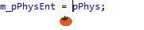

Access to Quick Actions and Refactorings
Access many features of Visual Assist via the Quick Action and Refactoring menu (Shift+Alt+Q) whose content varies with context and placement of the caret: on a symbol, in white space, and with or without a selection.
If you use a mouse, click the tomato or triangle icon that appears when hovering to see the same menu.

Quick actions and refactorings are also available in the VAssistX menu, the context menus of the Visual Assist tool windows, and the context menu of the text editor.